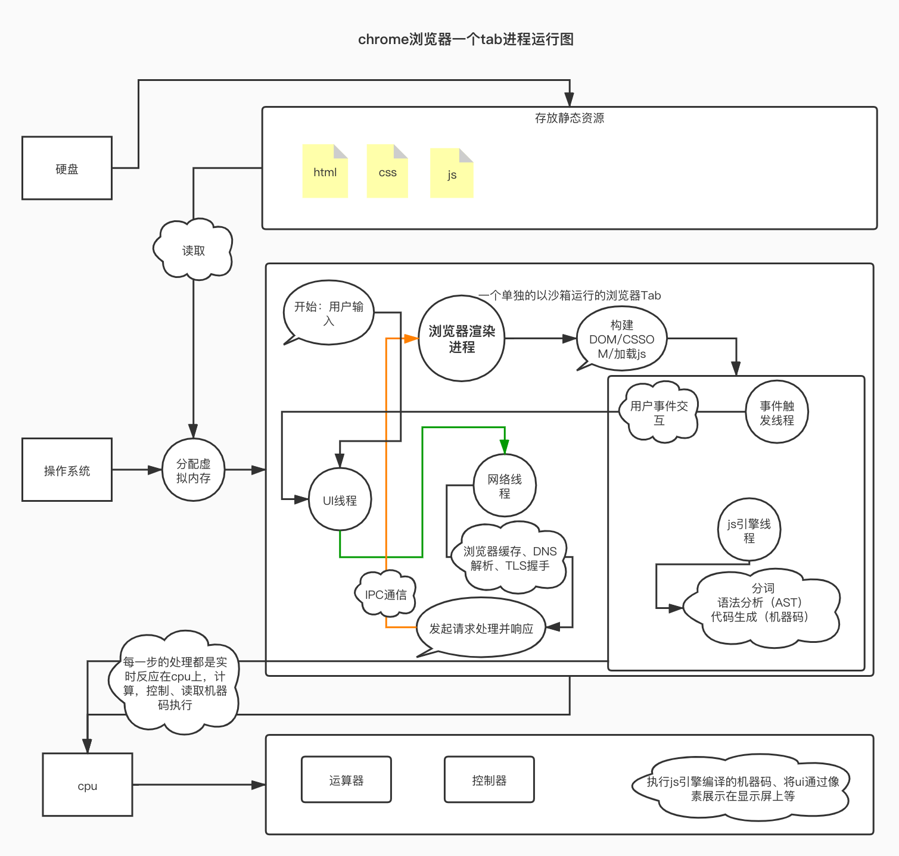

浏览器运行原理
浏览器运行原理梳理

CPU串行
- 单核
- 多核
GPU图形处理器
- 多个核心共同工作，并行能力很强
内存
渲染进程内存
问题：因为多进程不会共享内存空间，进程数量多之后内存占用大
解决：进程数到达一定界限之后，会将同一个网站的
tab放在同一个进程中跑
网站隔离：跨站点的
ifream拥有一个独立的进程，同源策略浏览器主进程服务化
拆分为不同的服务
- 在一些性能好的机器上，运行单独的进程，提高系统的稳定性。
- 在一些性能不好的机器上，运行合并为一个进程，节约内存。
目的：节省内存
多进程架构
浏览器主进程，会有很多线程
概览：主进程会得知这些请求以及线程创建通信的信息，主进程得知数据准备完成之后，会通过
IPC通知渲染进程，可以提交本次导航，并且继续接受接下来的HTML数据，渲染进程导航结束之后会通知主进程，本次导航结束，开始加载并且渲染和解析HTML文档。这时候，浏览器tab的当前会话会被更新为新导航的地址，以及开始加载tab菊花、生效后退按钮，为了方便打开之前关闭的tab会话，浏览器的历史会话会被保存在磁盘上。负责包括地址栏，书签栏，前进后退按钮等部分的工作；
负责处理浏览器的一些不可见的底层操作，比如网络请求和文件访问；
导航输入-
UI线程处理输入
根据用户的输入，
UI线程要进行一系列的解析来判定是将用户输入发送给搜索引擎还是直接请求输入的站点资源。开始处理
当用户按下回车键的时候，确定解析类型
读取响应
确定响应主体的具体媒体类型
（MIME Type），最直接的方法就是通过HTTP请求头的Content-Type来判断是属于哪种媒体类型，网络线程告知UI线程，数据已经准备好可以开始导航到所需要的站点在开始处理的时候，已经知道要导航到哪里的站点，浏览器为了优化，
UI线程其实已经在这一步开始提前启动创建了一个渲染进程，如果一切都没问题，响应回来之后就可以直接准备渲染，而不是等数据准备好之后才开始创建。如果网站失效或者重定向之类的话，刚刚为先前的站点创建的渲染进程会被摒弃，从而开始创建一个新的目标渲染进程。
Content-Type: text/htmlzip/静态资源文件
网络请求-网络线程
发起新的请求：网络线程 初始化一个网络请求来获取站点的内容。网络线程会进行一系列诸如
DNS寻址以及为请求建立TLS连接等的操作。网络线程会准备一些操作，如下：DNS域名解析- 建立
TCP连接 SSL/TLS- 发起
HTTP/HTTPS请求
DNS解析TCP/IP连接SSL/TLSTLS握手协议（非对称加密算法），客户端带着HOST以及随机生成的一个session key1去服务器握手，服务器收到TLS请求，根据客户端HOST寻找主机以及安全证书，服务器生成一个session key2以及将加密套件和证书返回给浏览器，客户端验证证书有效性（有效性，域名，有效机构，吊销状态）必须全部满足，否则会提示警告，验证如果通过，浏览器生成一份session key3通过第二步服务器返回的公钥加密，将结果再次返回给服务器，浏览器将session key1、session key2、session key3组合生成一个新的session key，服务器收到4的数据，利用非对称加密算法解析出session key3，同样也用key123组合生成session key
HTTP/HTTPS响应响应类型
静态文件
html->text/html静态文件
js->application/javascript静态图片
image/png、jpg、jpeg、webpjson数据application/jsoncss样式text/css
文件读写-存储线程
渲染进程
概览：负责一个
tab内关于网页呈现的所有事情。
导航被确认之后，渲染进程会用相关资源开始渲染页面。渲染完成之后，通过IPC告知浏览器进程，UI线程从而停止loading。
如果在这个时候突然重新输入一个新的站点，旧的进程做收尾工作，新的进程开始新的一轮流程操作。
尽可能的为每个新开的Tab创建一个单独的内存以及进程（安全、沙箱）主线程
解析
HTML文档转换为DOM对象HTML的解析按照HTML标准来解析解析次级资源 -> 转为网络线程下载
渲染进程解析的过程中，如果遇到网页中的
<img><link>这些标签等，浏览器会渲染进程转而让网络线程去现在这些资源图片
css样式js
JS的下载和执行
JS和DOM解析是互斥的，因为JS操作可能会改变DOM结构，遂需要DOM加载完成之后。在遇到script标签的时候，HTML的加载和解析都会停止。
构建
CSSOM- 根据元素选择器，渲染构建
CCSOM，计算生成样式
- 根据元素选择器，渲染构建
布局
- 通过遍历
DOM对象，计算样式和布局位置坐标以及盒子大小，生成布局树，布局树和DOM树的区别：视图可见为布局树，例如，display:none在布局树上不显示，但是在DOM树上会有
- 通过遍历
绘制
- 计算出了样式和布局左边，按照先后顺序绘制元素
合成帧
- 主线程通过遍历布局树生成层树，每一层都会被单独的栅格化，最后通过合成线程将层组合为帧。
层树确定，主线程->合成线程，合成线程栅格化每一层，合成线程将其每一层分割为多个磁贴，每个磁贴会发送到栅格线程，栅格化每个磁贴，并且存储在GPU显存上
- 主线程通过遍历布局树生成层树，每一层都会被单独的栅格化，最后通过合成线程将层组合为帧。
工作线程
- 处理
web worker或者service worker的一些事情
- 处理
合成线程
- 合成是一种将页面分成若干层，然后分别对它们进行光栅化，最后在一个单独的线程 - 合成线程
（compositor thread）里面合并成一个页面的技术。当用户滚动页面时，由于页面各个层都已经被光栅化了，浏览器需要做的只是合成一个新的帧来展示滚动后的效果罢了。
合成器的优点在于，其工作无关主线程，合成器线程不需要等待样式计算或者JS执行，这就是为什么合成器相关的动画 最流畅，如果某个动画涉及到布局或者绘制的调整，就会涉及到主线程的重新计算，自然会慢很多。
- 合成是一种将页面分成若干层，然后分别对它们进行光栅化，最后在一个单独的线程 - 合成线程
光栅线程
- 将需要展示的信息转化为显示器的像素的过程叫做光栅化
渲染进程 联系 用户事件
概览：合成线程会将注册了事件的区域绑定为，非快速滚动区域。当用户事件发生在这些区域时，合成线程会将输入事件发送给主线程来处理。如果输入事件不是发生在非快速滚动区域，合成线程就无须主线程的参与来合成一个新的帧。
事件监听伪代码
1
2
3
4
5document.body.addEventListener('touchstart', event => {
if (event.target === area) {
event.preventDefault()
}
}, {passive: true});{passive: true}这个参数会告诉浏览器您仍要在主线程中侦听事件，合成线程也可以继续合成新的帧。
否则，一些没有用户输入的页面，也会等主线程完成之后合成线程才干活，从而丧失合成线程优势。类似于同步和异步方式。查找事件的目标对象
- 当合成线程向主线程发送输入事件时，主线程要做的第一件事是通过命中测试去找到事件的目标对象。具体的命中测试流程是遍历在渲染流水线中生成的绘画记录来找到输入事件出现的
x, y坐标上面描绘的对象是哪个
- 当合成线程向主线程发送输入事件时，主线程要做的第一件事是通过命中测试去找到事件的目标对象。具体的命中测试流程是遍历在渲染流水线中生成的绘画记录来找到输入事件出现的
插件进程
- 负责控制一个网页用到的所有插件
GPU进程- 负责处理
GPU相关的任务，独立进程是因为要处理不同tab的渲染请求
- 负责处理
工具进程
下载管理器
浏览器主线程、v8解析多线程解析、执行js
概括
JavaScirpt引擎可以将JS代码编译为不同CPU对应的汇编代码，这样我们才不要去翻阅每个CPU的指令集手册。当然，JavaScript引擎的工作也不只是编译代码，它还要负责执行代码、分配内存以及垃圾回收。V8属于JIT编译器，在运行的时候先编译再执行，这种方式被称为即时编译，直接运行源码js图片参考：https://image.fundebug.com/2019-07-16-ignition-turbofan-pipeline.png、https://pic3.zhimg.com/80/v2-577dc100b5725942708b9ab7e74ac4b0_720w.jpg
词法分析
语法分析
- 汇总：词法分析、语法分析 将
JavaScript源码转换为AST、AST生成作用域以及执行上下文，对所有的变量和函数定义 预编译- 词法作用域和动态作用域
- 词法作用域是在定义的时候作用域已经定了,跟着书写的位置查找上一层的代码
- 动态作用域是代码运行的时候，当前函数作用域找不到，会出去当前函数的上下文
- 词法作用域和动态作用域
- 汇总：词法分析、语法分析 将
Ignition解释器构建代码一个具有累加的寄存器
根据
AST和作用域转生成字节码（内存小于机器码）、执行此处已经开始执行，只是执行的不是
hot的热点代码收集函数运行时的信息
TurboFan编译器垃圾回收
- 回收不需要的内存释放空间
一些杂话
v8看不懂代码，拿到的东西是字符串、v8对源码做一些处理生成可以认识的AST- 移动端暴露出来的问题就是占用内存爆-字节码来调节内存和执行速度
语言分类
本博客所有文章除特别声明外，均采用 CC BY-SA 4.0 协议 ，转载请注明出处！